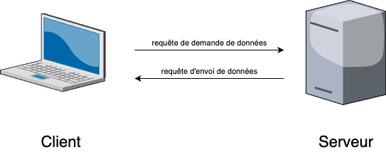
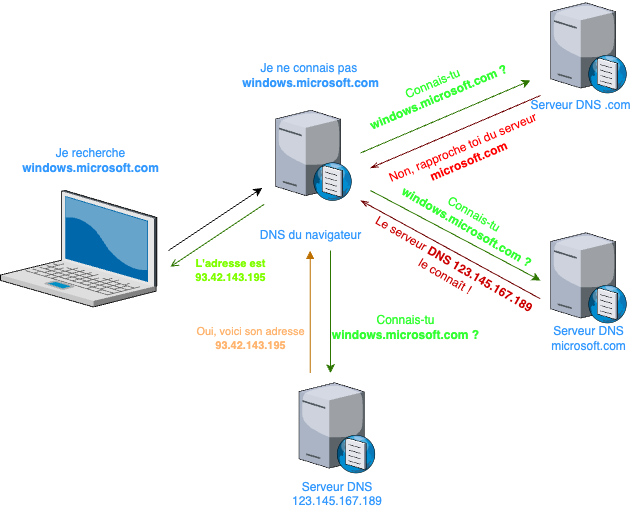

Web
Point Historique et Définitions
Le WEB a été créé en 1989 au CERN (institut de recherche Suisse) par une équipe chapeautée par Tim Berners-Lee et Robert Cailliau.
Le but du projet initialement était la création d'une application qui permettrait l'échange de données sur Internet.
La technologie du WEB repose sur l'utilisation d'hyperliens. Les hyperliens sont des liens cliquables souvent bleus ressemblant à cela :
Lien menant à l'accueil du site
Ces divers hyperliens permettent d'accéder à des données qui sont stockées sur des serveurs, comme des pages WEB, des images ou tout type de contenu.
Pour accéder aux différents serveurs, ces liens "pointent" vers les adresses IP correspondant aux différents serveurs qui détiennent ces ressources.
Pour accéder à toutes ces données, on utilise un navigateur WEB, un logiciel qui permet de traiter des demandes de données (appelées requêtes), les afficher ou réaliser certains traitement sur celles-ci.
Anecdote : voici la toute première page WEB, celle créée par les chercheurs du CERN : première page web
Modèle Client - Serveur
On a vu précédemment dans les échanges TCP, que deux machines communiquaient : emettrice et réceptrice.
On appelle client une machine qui souhaite recevoir des informations ou des données. Cette machine correspond à la machine que l'on nommait réceptrice.
On appelle serveur une machine qui dispose d'informations ou de données et qui a pour rôle de les envoyer. Cette machine correspond à ce que l'on nommait émettrice.
Lors d'un échange entre un client et un serveur, ceux-ci émettent des échanges formalisés que l'on appelle requête.
On peut schématiser cela de cette manière :

Adresse IP et URL
Il peut être fastidieux de retenir toutes les adresses IP de tous les sites que nous connaissons.
Personne n'écrit dans sa barre de recherche dans son navigateur 216.58.214.163 pour accéder à la page WEB associée : celle de google.fr
On appelle URL (Uniform Ressources Locator) l'adresse d'un site WEB, adresse correspondante à l'adresse IP du serveur ou se retrouve la page mais dans des caractères intelligibles par l'être humain.
Une URL est consituée de plusieurs parties séparées par des points:
\(\overbrace{\texttt{http(s)://}}^{\texttt{protocole utilisé}}\underbrace{\texttt{www}}_{\texttt{sous-domaine}}\overbrace{\texttt{google}}^{\texttt{nom de domaine}}\underbrace{\texttt{com}}_{\texttt{extension du domaine}}\)
Le serveur DNS (Domain Name Server) possède une table de correspondance entre l'adresse IP du serveur disposant des informations et d'une adresse dite symbolique que nous pouvons retenir plus facilement.
Par exemple, nos navigateurs web possèdent des tables de ce style pour éviter de faire les mêmes requêtes tous les jours.
| Site | Adresse symbolique | Adresse IP |
|---|---|---|
| www.google.fr | 172.217.20.163 | |
| Youtube | www.youtube.fr | 142.250.178.142 |
| Leboncoin | www.leboncoin.fr | 18.164.52.43 |
| Amazon | www.amazon.fr | 52.95.116.113 |
Fonctionnement du serveur DNS
Le serveur DNS permet d'associer une adresse symbolique avec une adresse IP. Pour obtenir l'adresse IP d'un serveur disposant d'une ressource que l'on cherche via une adresse symbolique, on peut distinguer plusieurs cas :
Adresse symbolique connue dans le navigateur
Si l'adresse symbolique est déjà stockée dans le cache du navigateur (ou du système d'exploitation), celui-ci remplace envoie la requête de recherche de la ressource avec l'adresse IP qu'il connait déjà dans sa table.
Par exemple, si l'on cherche à aller sur le site www.google.fr, en dactylographiant notre adresse dans la barre de recherche, le navigateur va envoyer directement la requête de la page du site à l'adresse IP 172.217.20.163.
Adresse symbolique non connue dans le navigateur
Si l'adresse symbolique n'est pas connue par le navigateur (ou le système d'exploitation), divers requêtes sont réalisées à la suite pour trouver le bon serveur DNS qui dispose de l'adresse à chercher.
Cela va s'exécuter de manière récursive.
Admettons que nous cherchons le site windows.microsoft.com

Le langage des pages WEB : HTML
Le HTML (HyperText Markup Language) a été créé en 1991 par Tim Berners-Lee, alors qu'il travaillait au CERN. C'est un langage dit "à balises".
Un langage à balises est un type de langage informatique utilisé pour structurer et organiser des données en les entourant avec des balises ou tags.
Les balises sont des éléments de texte spécifiques, généralement entourés de crochets angulaires (< >), qui indiquent comment le contenu doit être interprété ou affiché.
Dans un langage à balises, chaque élément est délimité par une balise d’ouverture et une balise de fermeture.
Par exemple, dans HTML, la balise <p> marque le début d’un paragraphe, et la balise </p> marque sa fin :
Les balises ne sont pas visibles par l’utilisateur final, elles servent à structurer le document ou à fournir des informations sur la manière dont le contenu doit être rendu.
Les langages à balises sont souvent utilisés dans la création de documents web (comme HTML ou XML), car ils permettent d’ajouter une signification sémantique aux données et de contrôler la mise en forme ou le comportement du contenu.
HTTP : protocole des requêtes sur le WEB
HTTP (HyperText Transfer Protocol) est un protocole de communication qui permet l'échange de données ou de pages sur le WEB.
Il fonctionne selon un modèle client-serveur, où un client (par exemple, un navigateur web) envoie une requête à un serveur pour accéder à une ressource, comme une page web.
Cette requête inclut une méthode, comme GET (pour récupérer des données) ou POST (pour envoyer des données).
Le serveur répond avec un code de statut (comme 200 OK si tout se passe bien) et la ressource demandée, qui peut être un fichier HTML, une image, ou un autre type de contenu.